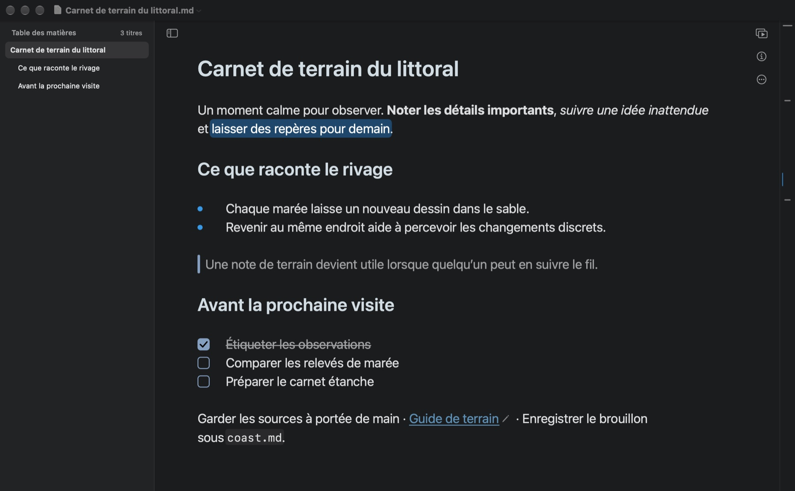
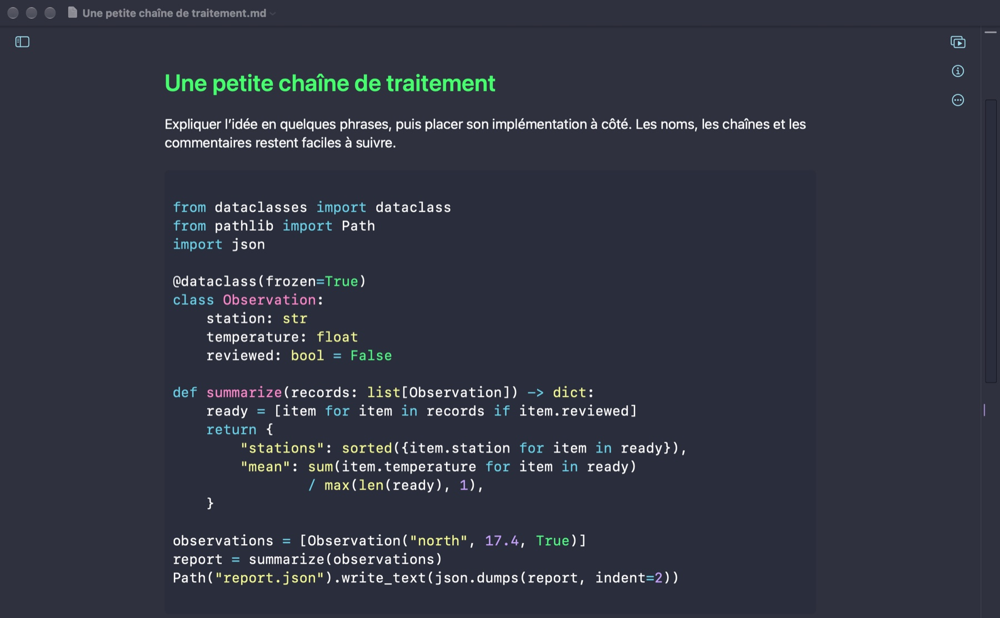
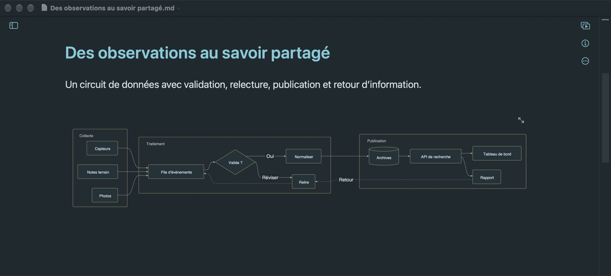
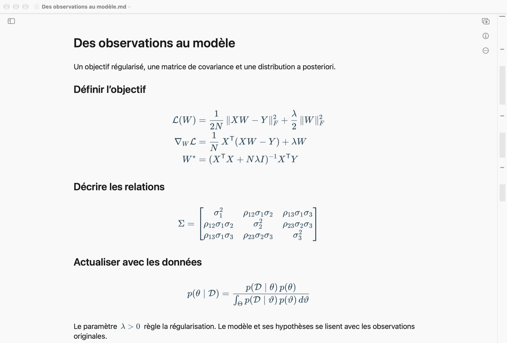
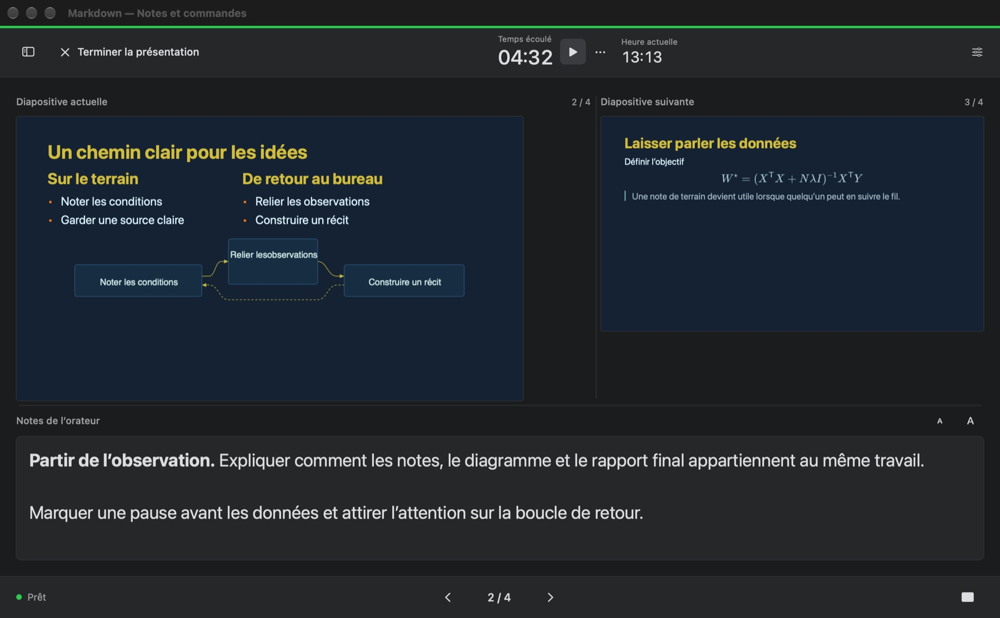

Retrouvez le fil
Passez d’un titre à l’autre, repérez-vous avec la minicarte et modifiez le document grâce à la recherche et au remplacement.
Un espace naturel pour vos idées. Sur Mac.
Développez votre propos. Dessinez les liens. Déroulez le raisonnement. Puis transformez le même document en présentation.
macOS 14 ou ultérieur · Sortie sur le Mac App Store en préparation

Toute une idée, sur une même page
D’un premier plan à une proposition technique, gardez les mots et leurs preuves ensemble. Titres, tableaux, listes et code prennent forme à mesure que vous écrivez.
Coloration selon le langage, explications juste à côté du code. Spécifications, notes de débogage et tutoriels gagnent en clarté.

Décrivez groupes, embranchements et boucles de rétroaction avec Mermaid. Modifiez la source, le schéma suit.

Formules en ligne dans vos phrases, équations sur plusieurs lignes pas à pas. Matrices, intégrales et démonstrations sont nettes.

Passez d’un titre à l’autre, repérez-vous avec la minicarte et modifiez le document grâce à la recherche et au remplacement.
Ouvrez et enregistrez de simples fichiers Markdown dans le dossier de votre choix. L’édition de base ne demande aucun compte.
Exportez les documents en PDF, HTML, Markdown ou texte brut. Pro ajoute d’autres formats.
De la page à votre public
Ajoutez des sauts de page pour composer vos diapositives, prévisualisez-les à côté du texte, puis présentez en plein écran. Pro ajoute une vue présentateur avec vos notes, la diapositive suivante et un minuteur.

Les essentiels pour commencer. Pro pour aller plus loin.
Les essentiels gratuits
Achat unique · Partage familial
L’achat s’effectue dans l’app. L’App Store affiche le prix local avant confirmation. Aucun abonnement récurrent.
Besoin d’un coup de main ?
Pour une question sur les documents, les exports ou un achat, écrivez au développeur. Précisez les versions de macOS et de l’app, ainsi que les étapes menant au problème. N’envoyez que des fichiers d’exemple que vous souhaitez partager.
entropysniper@gmail.com
Ouvrez un fichier .md sur votre Mac ou créez un document dans l’app, puis enregistrez-le dans le dossier de votre choix. Si un dossier ou une pièce jointe est inaccessible, vérifiez son emplacement et autorisez l’accès lorsque macOS le demande. Conservez une sauvegarde des fichiers importants.
Connectez-vous au Mac App Store avec le compte Apple utilisé pour l’achat. Dans Markdown, ouvrez Réglages → Pro et choisissez Restaurer les achats. Restez connecté à Internet et suivez les éventuelles demandes de connexion d’Apple. Si l’accès manque toujours, envoyez le message d’erreur à l’assistance.
Markdown Pro est un achat intégré unique, non consommable, avec le partage familial activé. Les membres éligibles peuvent en bénéficier via les réglages de partage familial d’Apple. Le prix et les conditions de l’achat sont affichés par l’App Store avant le paiement.
L’écriture locale et les contenus déjà enregistrés sur le Mac fonctionnent hors ligne. Les images distantes, aperçus de liens, achats et restaurations peuvent nécessiter une connexion. Les fichiers d’un autre service cloud dépendent de la disponibilité de ce service.
L’export d’un document en PDF est gratuit. L’export de diapositives en PDF ou PowerPoint nécessite Pro. Pro ajoute aussi Word, RTF, ePub, les images et TextBundle.
Apple gère les paiements de l’App Store. Pour un débit inconnu ou une demande de remboursement, utilisez le service Signaler un problème d’Apple. Le développeur n’a accès ni aux coordonnées de votre carte ni au mot de passe de votre compte Apple.
Votre travail reste le vôtre
Mise à jour le 7 novembre 2026
Cette politique concerne l’app Markdown pour macOS et ce site produit. Pour toute question de confidentialité ou d’assistance, contactez le développeur à entropysniper@gmail.com.
Markdown ouvre et enregistre les fichiers que vous choisissez sur votre Mac. Le développeur ne reçoit ni vos documents, ni leurs noms, ni votre activité d’écriture, ni vos préférences. L’app ne propose pas de compte, de publicité ou de SDK d’analyse. Si vous placez des fichiers dans un dossier synchronisé par un autre service, ses réglages et sa politique s’appliquent.
Un document contenant une image distante ou un aperçu de lien peut se connecter directement au site concerné. Ce site reçoit la requête, notamment des informations réseau comme votre adresse IP, et applique sa propre politique de confidentialité. L’ouverture d’un lien web donne aussi accès à un service externe.
Apple traite les achats et restaurations via l’App Store. Markdown utilise StoreKit sur votre appareil pour vérifier l’accès à Pro et conserve localement les informations d’achat nécessaires à cet accès. Le développeur ne reçoit ni vos coordonnées bancaires ni le mot de passe de votre compte Apple.
Lorsque vous écrivez à l’assistance, le développeur reçoit votre adresse, votre message et les pièces jointes que vous décidez d’envoyer, afin de répondre à votre demande. Contactez la même adresse pour toute question sur les informations déjà transmises.
Ce site n’utilise ni publicité, ni scripts d’analyse, ni cookies de suivi. Il est hébergé sur GitHub Pages. GitHub enregistre les adresses IP des visiteurs à des fins de sécurité et traite les informations d’hébergement selon sa propre déclaration de confidentialité.
Déclaration de confidentialité de GitHub ↗Vous choisissez les documents à ouvrir et l’endroit où les enregistrer, les copier ou les supprimer. Désinstaller l’app ne supprime pas les fichiers enregistrés ailleurs. Toute modification de cette politique sera publiée ici avec une nouvelle date.